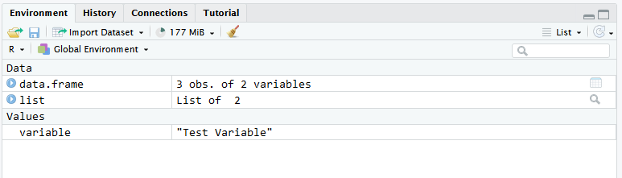
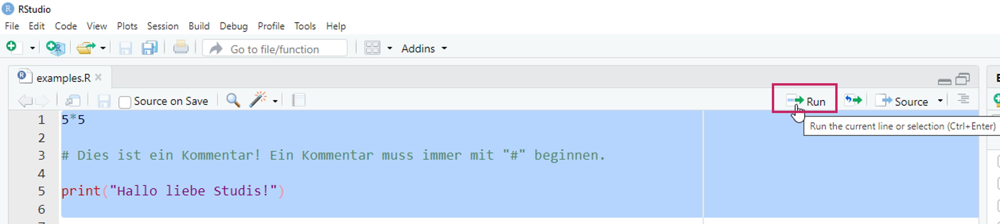
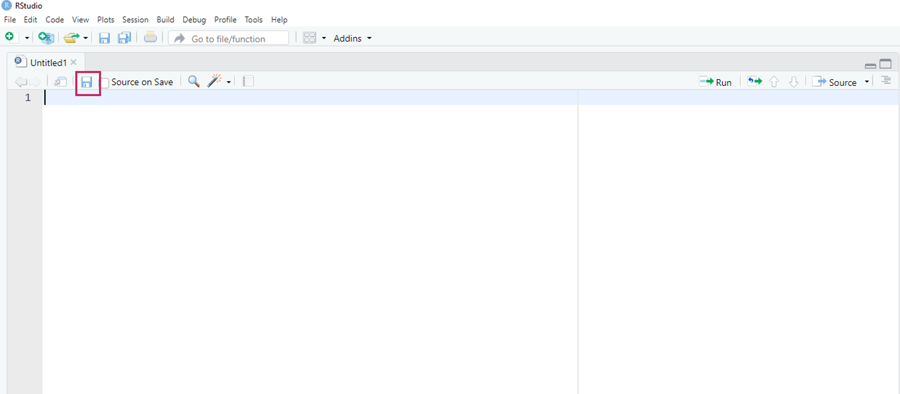
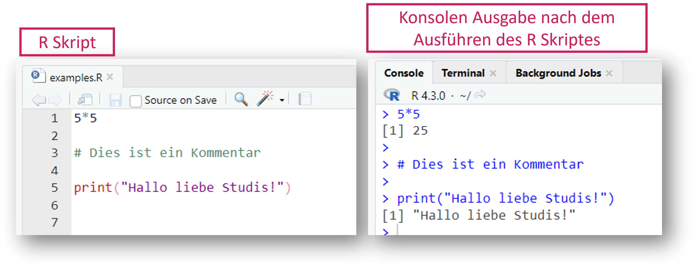

R und RStudio Installation
R Installation unter: https://cran.r-project.org/bin/windows/base/
RStudio Installation unter: https://posit.co/download/rstudio-desktop/
RStudio Einstieg
RStudio ist eine sogenannte integrated development environment (IDE), also eine Entwicklungsumgebung für die Programmiersprache R. Grundsätzlich sind auch andere IDEs möglich, wir werden in diesem Tutorial jedoch immer davon ausgehen, dass RStudio verwendet wird.
Nach dem RStudio geöffnet wird, sieht es so aus:
SCREENSHOT
Aktuell haben wir noch kein Dokument geöffnet. Wir sehen aktuell 3 separierte Bereiche bzw. Fenster.
Console

In der Console können R Befehle direkt ausgeführt werden. Dies ist praktisch für kleine Taschenrechner Befehle oder kleine Tests. Der Nachteil ist jedoch, dass die R Befehle nicht gespeichert werden können. Dafür wird ein R Skript benötigt.

Environment

Das Environment ist zu Beginn einer R Session leer. Wenn wir jedoch Variablen speichern oder Datensätze einladen, werden diese Objekte hier angezeigt.

Files

Je nachdem wo die working directory gesetzt ist, werden hier unterschiedliche Dokumente und Ordner angezeigt.
R Skripte
Wenn ein R Skript geöffnet wird, wird ein weiteres Fenster für das Skript angezeigt. In einem R Skript kann Code abgespeichert werden.
R Skript
Übersicht
In einem R Skript kann Code abgespeichert werden.

Kommentare
Grundsätzlich wird jeder Befehl und jedes Zeichen als R Code
verstanden. Wenn man einen Kommentar schreiben möchte, muss man in jeder
Zeile eine # davor setzen.
Code wird ausgeführt in dem der gewünschte Bereich markiert wird und dann auf den Run-Button geklickt wird. Es kann hier der gesamte Code markiert werden, aber auch einzelne Zeilen oder sogar nur einzelne Befehle.

Die Tastenkombination für Run ist unter Windows
Str + Enter und unter macOS Cmd + Enter.
Neues R Skript öffnen
Ein neues leeres R Skript wir über diesen Button geöffnet:

Man erhält eine große Anzahl an möglichen Formaten, unter anderem auch ein R Skript.

Das neu geöffnete R Skript sieht nun so aus und kann direkt abgespeichert werden mit dem Disketten-Symbol.

RStudio vs studyr
Die studyr Tutorials sind alle interaktiv gestaltet. Damit wir dir Feedback geben können und du nicht immer zwischen RStudio und unserer Website wechseln musst, sind R-Bausteine eingebaut. Siehe dir die folgenden Bilder und Aufgaben an, um zu verstehen wie in unseren Tutorials R eingebaut ist.

So sieht derselbe R Code in unserem Tutorial Format aus
Übungsaufgabe: Klicke auf den Button “Run Code” und vergleiche die Ausgabe mit den obrigen Bildern.5*5
# Dies ist ein Kommentar
print("Hallo liebe Studis!")Versuche Dich nun selbst!
Übungsaufgabe: Berechne 84 * 15. Gebe dazu die Berechnung in den R Code Bereich ein und klicke auf “Rund Code”Datentypen
Kurze Übersicht
- Logical: TRUE, FALSE
- Integer: Ganze Zahlen (Platz speichernd)
- Double: Kommazahlen
- Character: Buchstaben
Logical
Werte: TRUE (entwpricht 1) und FALSE
(entspricht 0)
Kann aufsummiert werden:
TRUE + TRUE
FALSE + FALSE
TRUE + FALSE Logische Operatoren können angewandt werden
FALSE & TRUE
FALSE | TRUE
5 < 10Logische Operatoren
| Symbol | Bedeutung |
|---|---|
< |
kleiner als |
> |
größer als |
== |
gleich |
!= |
ungleich |
| |
oder |
& |
und |
! |
Negierung |
Integer
integer-zahlen sind Ganzezahlen in R. Sie sind
platzsparender als double Zahlen, da Kommas ausgeschlossen
sind. R geht zuerst immer davon aus, dass es sich um double
Zahlen handelt, somit müssen integer-Zahlen explizit
definiert werden.
Hier gibt es zwei Möglichkeiten:
- L muss direkt dahinter gesetzt werden, z.B.
2L :ermöglich schnell eine Folge anintegerZahlen zu generieren, z.B.1:3erzeugt die Zahlen von 1 bis 3 in einzer Schritten
1L
1:10
10:1Mit der Funktion is.integer() können wir prüfen, ob es
sich um integer-Zahlen handelt oder nicht.
is.integer(1)
is.integer(1L)Double
double-zahlen sind sogenannte Gleitkommazahlen. Diese
Zahlentypen werden für normale Berechnungen verwendet
- Kommazahlen
- Sonderfälle
InfPositive Unendlichkeit-InfNegative UnendlichkeitNaNNot a Number (Fehlender Wert im Datensatz)
8/5
4.44 + 2.1Mit der Funktion typeof() können wir abfragen, um
welchen Datentyp es sich handelt.
typeof(5)Character
Viel Nichts in R
In R gibt es viele Möglichkeit, um auszudrücken, dass etwas nicht vorhanden ist. Alle Formen von “Nichts” haben eine leicht andere Bedeutung und werden in unterschiedlichen Fällen verwendet oder produziert.
Hier eine (nicht vollständige) Übersicht:
NaN: Not a Number (Länge ist 1). Wir verwendet bei invaliden Rechenoperationen.NA: Not Available (Länge ist 1). Wird klassisch für fehlende Werte verwendet.NULL: Repräsentiert das Null-Objekt in R (Länge ist Null). Wird z.B. in Funktionen verwendet für default Argumente.logical(0): Einlogical-Wert der Länge Null.integer(0): Eineinteger-Zahl der Länge Null.double(0): Einedouble-Zahl der Länge Null.
All diese Werte stellen „nichts” oder „fehlend” dar.
Die Länge dieser Werte unterscheidet sich, so sind manche 0 und andere 1.
length(NaN)
length(NA)
length(NULL)
length(integer(0))
length(double(0))NA
NA == "test"
NA == 5
NaN == 5NaN
0/0
Inf/1logical(0)
NULL == "test"
NULL == 5
integer(0) == 5Achtung: Fehlende Werte
Fehlende Werte wie NaN sind manchmal infektiös!
Bei Rechenoperationen führt z.B. ein NaN dazu, das das
Ergebnis auch ein fehlender Wert ist.
Dies gilt jedoch nicht für | Operationen.
NaN kann NICHT mit == geprüft werden! Es
muss mit is.na() geprüft werden.
NaN == NaN
NaN < 5
10 * NaN
NaN & TRUE
NaN | TRUE
is.na(NaN)Hilfreiche Funktionen
Erstellt Dummy Variablen eines bestimmten Datentyps.
integer(5)## [1] 0 0 0 0 0double(5)## [1] 0 0 0 0 0character(5)## [1] "" "" "" "" ""logical(5)## [1] FALSE FALSE FALSE FALSE FALSEPrüfungen
number = 5
is.integer(number)
is.double(number)
is.character(number)
is.logical(number)
is.numeric(number)
is.finite(number)
is.infinite(number)## [1] FALSE
## [1] TRUE
## [1] FALSE
## [1] FALSE
## [1] TRUE
## [1] TRUE
## [1] FALSETest
open_tutorial <- function(tutorial_name) {
if (!is.character(tutorial)) {stop("Invalid input argument: tutorial name must be a charcter string.")}
# learnr::run_tutorial(tutorial, package = "studyr")
}
NULL
output$distPlot <- renderPlot({
x <- faithful[, 2] # Old Faithful Geyser data
bins <- seq(min(x), max(x), length.out = input$bins + 1)
hist(x, breaks = bins, col = 'darkgray', border = 'white')
})